Byteflies
- Data transfer protocol for professionals
- As a professional: do I need to do anything on a daily basis or all N days (for each patient using a specific device / app)?
- As a professional: do I need to do anything after each individual period of device / app use ended (for each patient using a specific device / app)?
- As a professional: do I need to do anything after the full periods of use of a specific device / app ends (for each patient using a specific device / app)?
- Original device setup and pairing
- Device pre-setup and configuration
- Troubleshooting/FAQ
- Returned device processing and cleaning / an application use period for a participant has ended
- Device recycling and provisioning
General Device Introduction
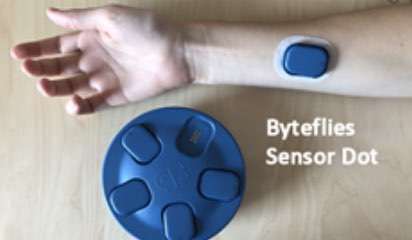Sensor Dots by Byteflies is a multimodal wearable device to continuously record physiological signals, in home or in the clinic. Sensor dot can be placed in multiple places on the body to record different types of physiological signals.
How does this device look?
The Sensor Dot is a small blue device (see pictures below) with an LED light indication. Byteflies device comprises from the main sensor the Sensor Dot (fig 1), the Sensor Patch (fig 1) and the docking station (fig 2). Sensors Dots are placed into Sensor Patches that can stick on the body and take measurements. The docking station is used to charge the Sensor Dots and transfer data on the Byteflies Cloud.
| 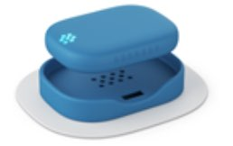 |  |
| Fig 1:Sensor Dot placed into the Sensor Patch | Fig 2:Sensor Dots placed on the Docking Station |
What does it record?
Sensor Dots record high qualitybrain (electroencephalography, EEG),heart (electrocardiography, ECG) andmuscle activity (electromyography, EMG), as well aseye motion (electrooculography, EOG) and generalmotion data (3-axis accelerometer and gyroscope).
How is it used?
 Sensor Dot is placed in Sensor Patch and then sticks on the indicated location on the body. Sensor Dots can be worn in multiple locations on the body in the same time. It allows continuous measurement up to 24 hours and can be worn during sleep. Contact with water should be avoided – Sensor Dot is water resistant but not waterproof.
Sensor Dot is placed in Sensor Patch and then sticks on the indicated location on the body. Sensor Dots can be worn in multiple locations on the body in the same time. It allows continuous measurement up to 24 hours and can be worn during sleep. Contact with water should be avoided – Sensor Dot is water resistant but not waterproof.
Data transfer protocol for professionals
As a professional: do I need to do anything on a daily basis or all N days (for each patient using a specific device / app)?
No. Anonymised movement data is stored on the Sensor Dot device for $TIME_PERIOD. You do not need to do anything daily but will need to assure that a meeting is arranged with the patients at the end of their overall study participation so that you can retrieve the device.
You need to be in contact and support the patient in case there is need. Sensors Dots are cleaned (see Section 7) and charged by the patient. Charging each Sensor Dot is required every 24 hours. You need to make sure that the patients charge, clean and wear the Sensor Dot devices properly. You need to make sure that the patients wear Sensor Patches in indicated locations on the body. You need make sure that Sensor Patches are replaced if necessary and patients have the support they need. You need make sure that all electrodes are cleaned and attached in required positions for the next measurement. To clean the Dot Sensors; see Section 7.
As a professional: do I need to do anything after each individual period of device / app use ended (for each patient using a specific device / app)?
Yes. After ($TIME_PERIOD – N DAYS) of use you must arrange a meeting with the patient in order to retrieve the Sensor Dots. You must retrieve data from it and recharge it by placing it on theDocking Station. You need to make sure that the docking station is connected to a power supply and the Wi-Fi - Further instructions are provided in Section 3. As soon as the docking station is connected with Wi-Fi and the Sensor Dots are placed on the slots, the data transfer to theByteflies IoT Manager - Cloud Platform will start automatically. Data transfer will take some time (hours) depending on the dataset sizes collected. Sensor Dots LED’s will have an orange colour indication when data transfer is in process, and they will turn green when the data transfer is completed. You then need to view and download all data that have been retrieved and stored on theByteflies IoT Manager - Cloud Platform. The data will then need to be transferred using the**and stored as a local backup using the** - see further instructions in Section 3. The device will then be cleaned and prepared to be used by another study participant. See Sections 6 and 7. In the case you are not able to visit the patient to retrieve the data; you need to guide the patient to connect the docking station to the Wi-Fi himself/herself following the steps described in Section 3.
As a professional: do I need to do anything after the full periods of use of a specific device / app ends (for each patient using a specific device / app)?
Yes. You must visit the patient, retrieve the device, transfer data and recharge it. You must manually retrieve data from it and recharge the device by placing it on thedocking stationwhile it is connected with a power supply and the Wi-Fi. Further instructions are provided in Section 3. You need to make sure that all data from the Sensor Dots have been retrieved and stored on the Byteflies IoT Manager - Cloud Platform. Once all data have been transferred to the Byteflies IoT Manager - Cloud Platform, you can view and download them. The data will then need to be transferred using the**and stored as a local backup using the**. You must then manually download and upload these files to the IDEA-FAST project at:https://data.ideafast.eu.
Original device setup and pairing
If handling a device and it arrives new: what needs doing before it gets sent to a study centre?
Put into inventory management?
Record the unique device ID that is printed in the inventory management tool athttps://inventory.ideafast.eu. Also use the to generate a project-specific device ID for each device. Record both IDs in the appropriate fields in and also record the current location of the device. Update to “EN-ROUTE-TO-” once dispatched.
Use the to produce a label and a backup label for the device and attach one label to the device immediately. Enclose the backup label with the device when preparing for dispatching it.
Label the device, then update device once dispatched. Make sure the device is charged: connect the dock to a power supply; position all sensor dots on the dock.
Needs firmware update?
No, but in case it needs update; any update is done automatically when the docking station is connected to the power and internet.
Pairing with a companion application?
Data are stored on dot sensor and requires transfer on the Byteflies Cloud Platform as described in the above section. No pairing with a companion app is required.
Any account setup required?
Yes. You need to have an account at Byteflies IoT manager (cloud platform) in order to be able to upload and view the data at:https://cloud.byteflies.net/ . You will need to contactArno Bossaert from Byteflies to register your account. Ask your site lead for Arno’s contact details.
Needs pairing with hub device?
Yes. The docking station needs to be connected to the internet and to a power supply. Please see further instructions on device setup in Section 3.
Any assembly required?
Yes. Sensor dots need to be placed in the Sensor patches; the electrodes need to be attached depending on what data need to be collected. Please see further instructions on device setup in Section 3.
Package together with which other devices for which study centre?
Yes. All sensor dots, hubs and patches will be packaged together.
If handling an application: what needs doing before a study centre can use the app?
Do we need to get accounts from the application provider?
Yes. Please see further instructions in Section 3.
Can the software be downloaded, or do we need to make it available?
No need to download. Please see further instructions in Section 3.
Does it need to be installed on the hub devices?
Not Applicable.
Do we need to activate study accounts?
Not Applicable.
Device pre-setup and configuration
What sort of a device / application is this, what is it for and how does it work?
Sensor Dots by Byteflies is a multimodal wearable device to continuously record physiological signals, in home or in the clinic.Sensor Dots record high qualitybrain (electroencephalography, EEG),heart (electrocardiography, ECG) andmuscle activity (electromyography, EMG), as well aseye motion (electrooculography, EOG) and generalmotion data (3-axis accelerometer and gyroscope).
The device has 3 main parts:
1. Sensor Dot(Fig 3 and 4): a small sensor device that can record 2 biopotential channels, as well as motion-related signals continuously.
| 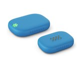 |  |
| Fig 3:Sensor Dot | Fig 4:Sensor Dot placed into the Sensor Patch |
2. Docking station with USB charger(Fig 5 and 6).The docking station reads out data from Sensor Dots and charges their batteries. It communicates with theByteflies IoT Manager (Cloud Platform)to manage all your devices and recorded data. It must be connected to the internet and to a power through the USB charger provided to transfer any data to the Byteflies cloud platform.
| 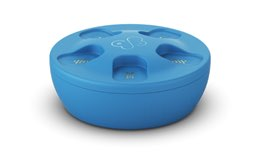 | 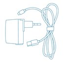 |
| Fig 5:Docking Station | Fig 6:Charger for the Docking Station |
3. Sensor Patch(Fig 7) isthe interface between a Sensor Dot and commercially available biopotential electrodes. The Sensor Dot can be magnetically attached onto the Sensor Patch. If you are only interested in motion data, a version of the Sensor Patch without biopotential leads can be used. Up to 2 biopotential channels and a triaxial accelerometer can be recorded simultaneously with a single Sensor Dot. You can simultaneously use as many Sensor Dots as needed to capture your signals of interest.
| 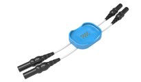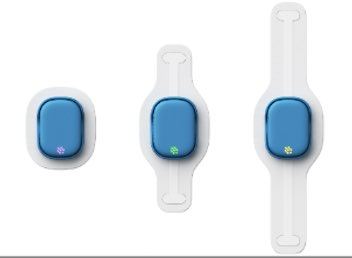 |
| Fig 7:Sensor Patch with Electrodes |
Configuration and Analysis
Not Applicable.
What has already been done in pre-setup for the device or application?
Not Applicable.
What will need to be done before a patient can start using this?
You need to arrange a meeting with the patient and provide the patient with six (6) Sensor Dots, Sensor Patches and the Docking Station. You need to make sure the Sensor Dots have been cleaned and all previously recorded data have been retrieved. You need to explain the patient how to clean and charge the Sensor Dots. You need to create the Sensor Patches and help the patient wear the Sensor Patches in the indicated body locations. You need to show them how to position the Sensor Dots into the Sensor Patches. See instructions for recording data below.
The patient needs to understand how to alternate the Sensor Dots: three (3) will be worn and three (3) will be charged, and they will be alternated every 24 hours. Charging each Sensor Dot is done by placing it on the Docking Station provided and it is required every 24 hours. You need to make sure that the docking station is connected to a power supply.
Any account setup required?
Yes. You need to have an account at Byteflies IoT manager (cloud platform) in order to be able to upload and view the data at:https://cloud.byteflies.net/ . You will need to contactArnoBossaert from Byteflies to register your account. Ask your site lead for Arno’s contact details.
Needs pairing with hub-device?
Not Applicable.
Any configuration / assembly required?
Below are instructions on using Byteflies device forA. Recording DataandB. Retrieving Data
A. Instructions for Recording Data
Take the Sensor Patch and attach the electrodes you want to use. Take the orientation of connections into account:
| 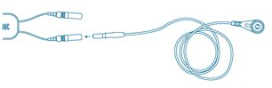 | 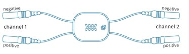 |
| Fig 8:Positioning of Electrodes at Sensor Patch | Fig 9:Indicated positioning of Electrodes |
Make sure the Sensor Dot is ready for operation. To do this, lift the Dot up from the docking station and place it back. The LED indicator will turn green for 10 seconds and then the Sensor Dot is ready for recording. Lift the Dot up again. The Sensor Dot should have a blinking green LED light, which means it is recording. If this is not the case, place it back in the Docking Station and repeat previous steps again.
 |
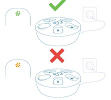 |
| Fig 10:The Sensor Dot should have a green LED light as indication that it is charged and ready for recording. | Fig 11:If the LED is orange, it means it is still charging and transferring data to the cloud. |
The Sensor Dot should have a green LED light as indication that it is charged and ready for recording.Snap the Sensor Dot into the Sensor Patch when ready for recording (blinking green light).
| 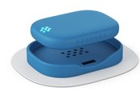 |
| Fig 12:Sensor Dot in Sensor Patch with blinking_green _LED light |
Attach the Patch and the electrodes to the patient (as indicated below) – indicative positions below for ECG/EEG/EMG measurement. Make sure the Sensor Patch and the electrodes have been glued firmly. Change tape if necessary. You can measure up to 24-hours before the Sensor Dot needs recharging. Create the Sensor Patch: complete all assembly required and stick it on the patient’s body - follow the steps shown in Figures 13 to 16 below.
| 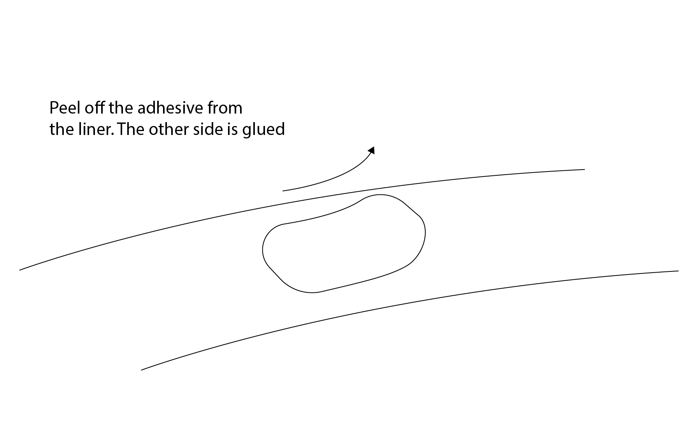 | 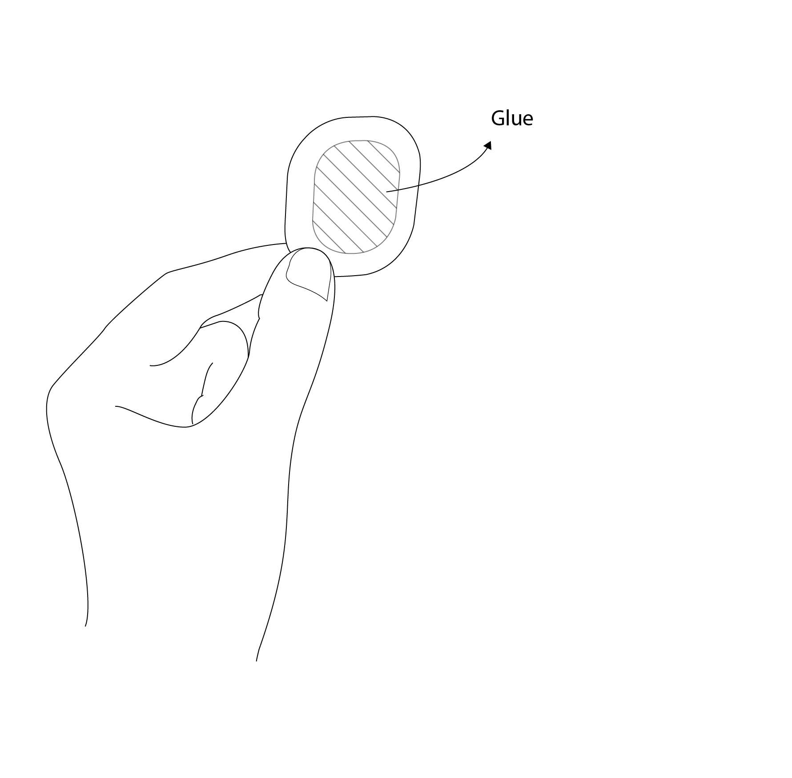 |
| Fig 13:Peel off new adhesive | Fig 14:Side with the glue should be facing up |
| 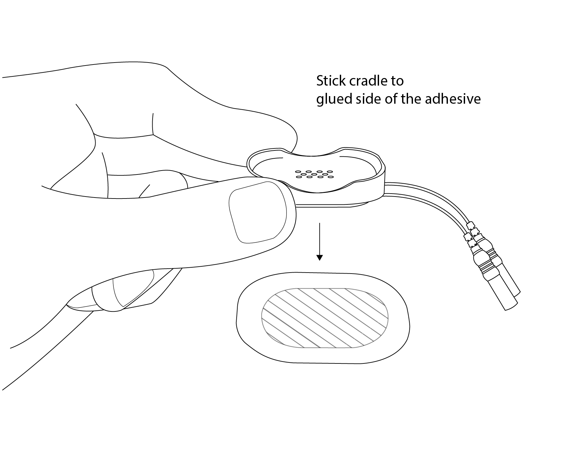 | 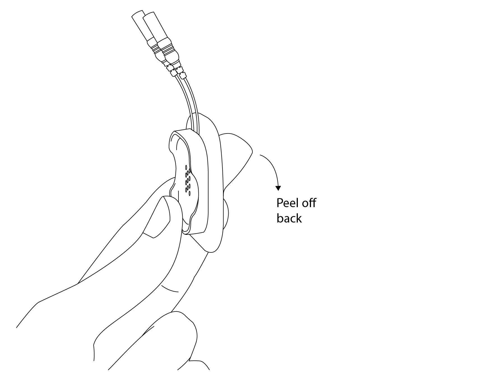 |
| Fig 15:Stick the Sensor Patch on the adhesive | Fig 16:Peel of the back of the adhesive – side with glue is facing outside – and stick the Sensor Patch on the patient’s body |
Attach the Sensor Dot to Sensor Patch on the patient’s body as follows:
- EEG:place one sensor on the mastoid bone (below ear) as outlined in Figure 18.
- ECG:place one sensor above the heart as in Figure 19.
| 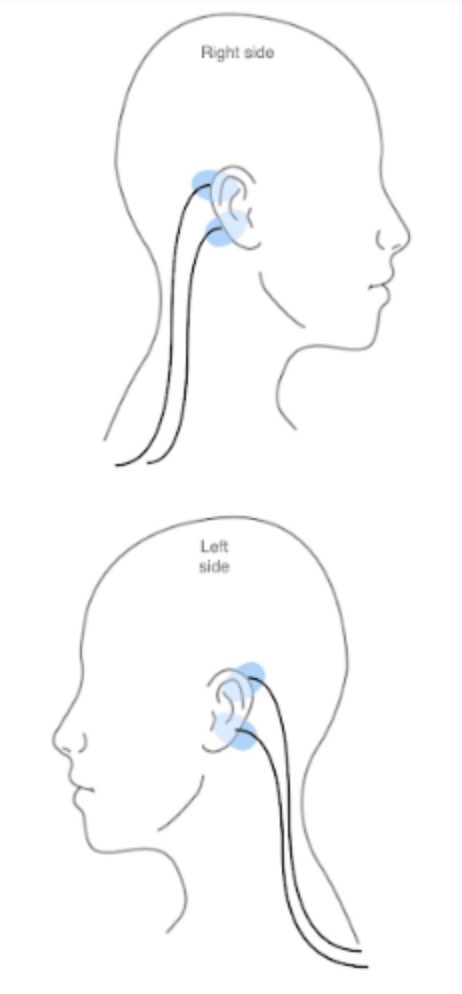 | 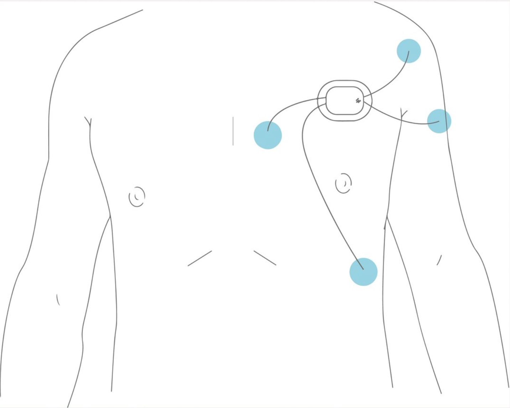 |
| Fig 18: Suggested EEG set up | Fig 19:Suggested ECG set up |
B. Uploading Data to Byteflies IoT Manager – Cloud Platform
Byteflies docking station is required for charging Sensor Dots, setting Sensor Dots for data measurement and retrieving data from Sensor Dots.
- Connect the charger cable to the Byteflies docking station and plug the device to the power.
 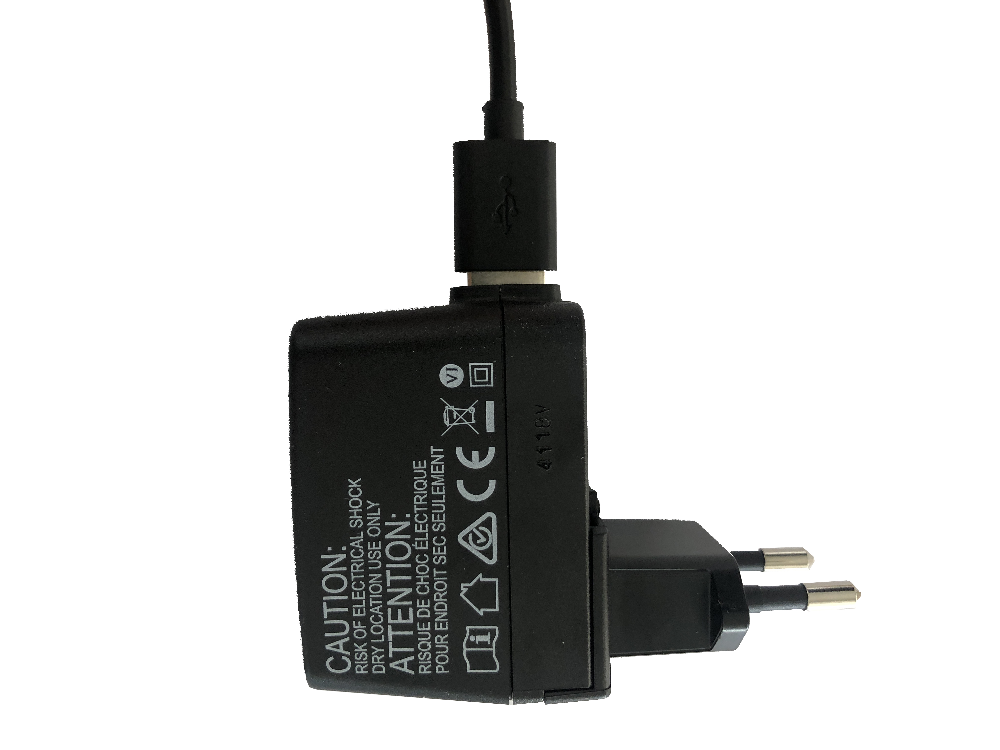 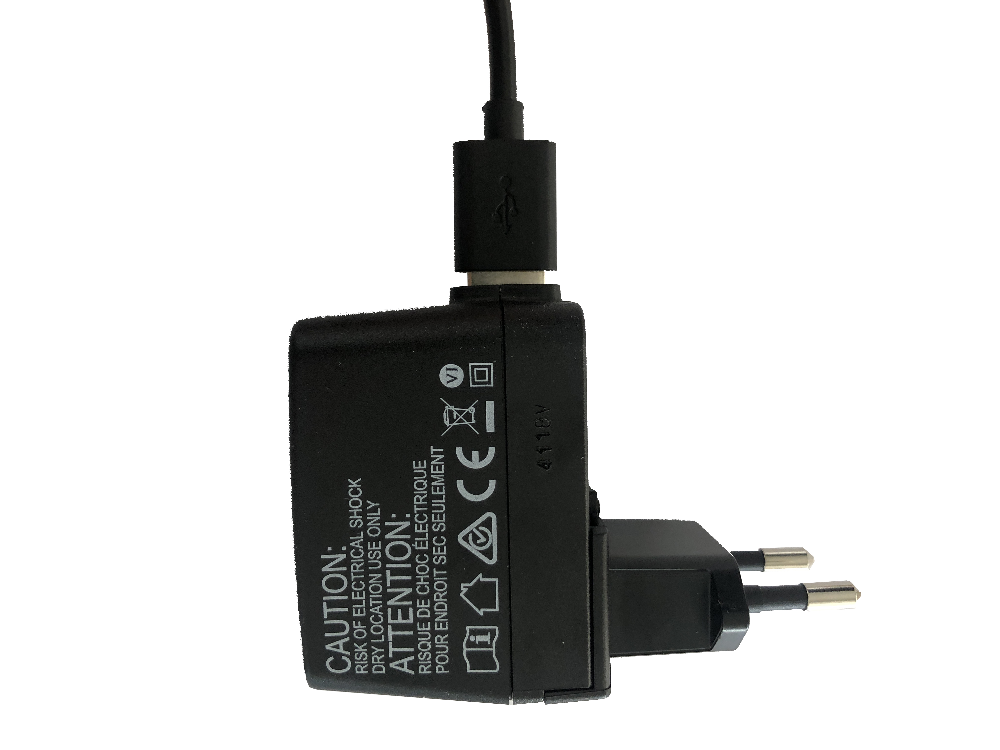
|
| Fig 20:Connect Docking station with USB cable and charger provided |
- Connect the docking station’s network to your internet network. All steps below are also explained in the IFU.
1) Connect with the BF-XX:XX:XX:XX:XX:XX network and enter the provided password. The password can be found in the IFU on the first page.
2) In your browser, navigate tohttp://192.168.51.97 . Here you will see a webpage where you can connect the docking station with your own 2.4GHz Wi-Fi network. This is required so that data can be uploaded from the hub to the web.
3) Look in the list on the webpage to your own Wi-Fi-network and click ‘Connect’. After a few seconds the Wi-Fi-status above will indicate ‘Connected to [Your own Wi-Fi network]’. If this isn’t the case, try again. When this doesn’t work after a few tries, contact Byteflies.
 |
| Fig 21:Connecting to Byteflies Network shown at the browser |
4) Check the colour of the LED light at the USB port of the docking station. If the colour is green, the installation is successful.
| 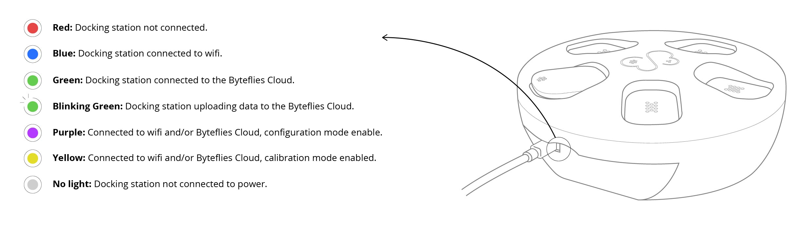 |
| Fig 22: LED light colour explanation – checking if docking station is connected to Wi-Fi |
- Place the Dot sensors at any available slot at the docking station. Data transfer can be done by multiple sensors at the same time. The light on thesensor dotwill turn orange when data is being transferredfrom the sensor dot to the docking station.
| 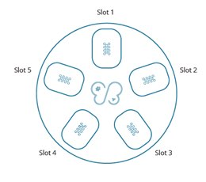 |
| Fig 23: Slots on the Docking Station to place Sensor Dots for data transfer |
- Once data has been transferred from the Sensor Dot to the Docking Station the Sensor Dot will turn green. Data stored on the Docking Station will be automatically uploaded to the Byteflies cloud platform when an internet connection is active. A light on the back of the Docking Station will blink green when uploading data to the Byteflies cloud (Figure 24).
| 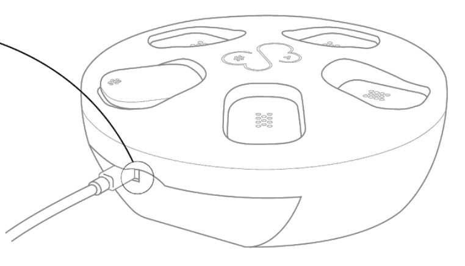 |
| Figure 24: Location of light on Docking Station that indicates connection to cloud platform. |
Uploading Data to IDEA-FAST Data Hub
To view any data on the cloud, you need to have an account at Byteflies IoT cloud platform. Go tohttps://cloud.byteflies.net/ and enter your credentials, then you will be able to view the data as illustrated below:
| 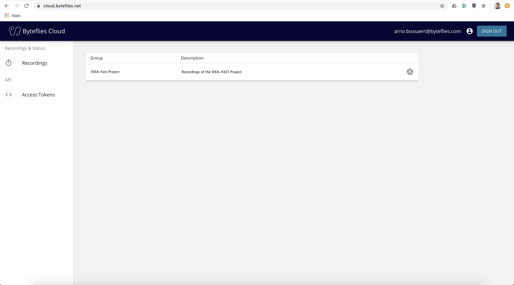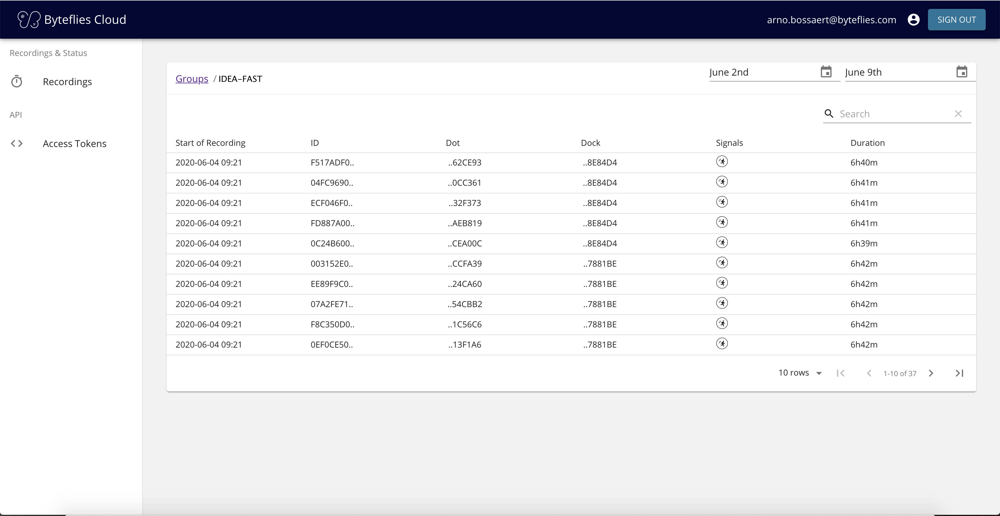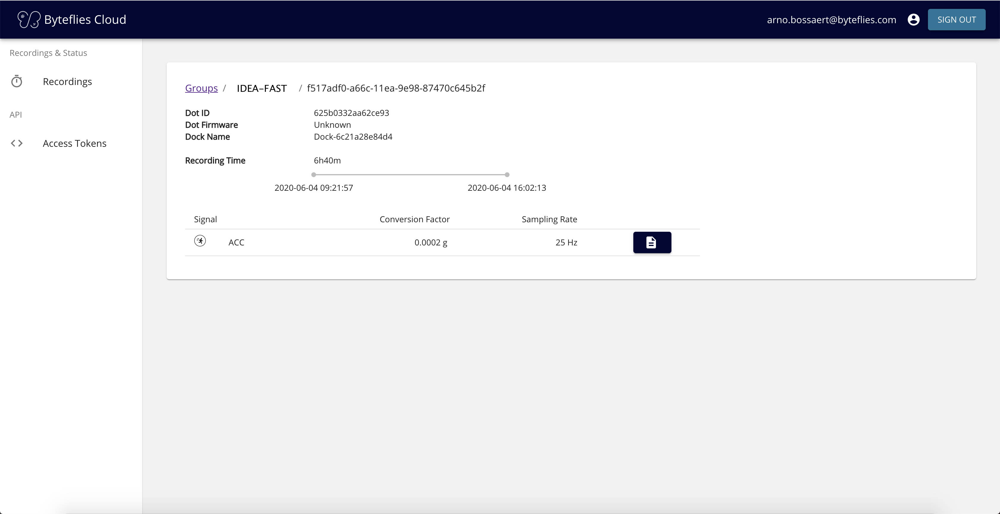 |
| Fig 24: List of data measurements on the Byteflies IoT Manager – Cloud platform |
- You can download raw data for each participant by clicking on the file buttons (see below). A *.csv file will be downloaded with measurements in raw format at your laptop.
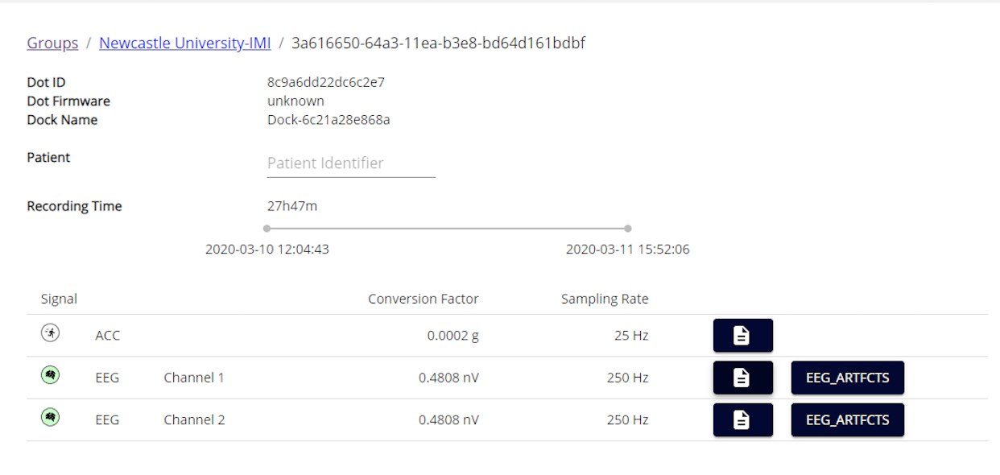
-
- You can identify a patient by editing the patient field as shown below.
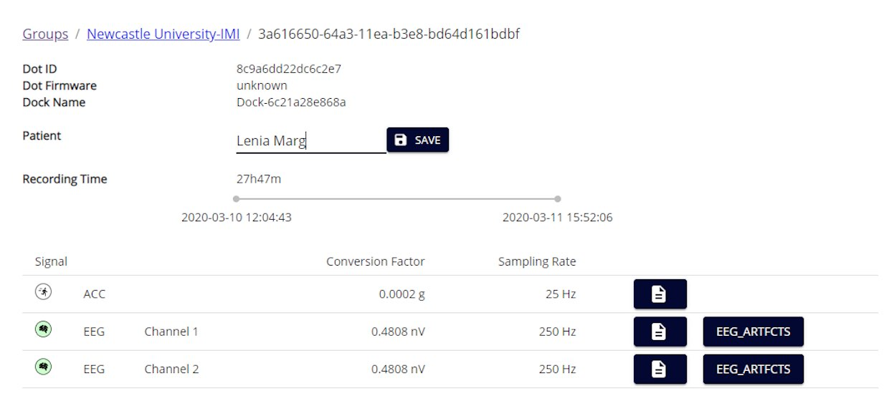
- The downloaded files must then be manually uploaded to the IDEA-FAST project at:https://data.ideafast.eu
- Use the file selector pop-up presented by your browser to select the file (or use drag-and-drop to start the upload to the datahub; please not that not all web-browsers will support this option).
- Please note that the *.csv files recorded can be very large and the data upload may take a long time to complete.
- Please also use the to store a backup copy of the data file (*.csv) on the IDEA-FAST backup hard-disk drive.
- Please make sure that BOTH the file upload AND the local data backup have been successfully completed.
- The Sensor Dots are automatically prepared for a new recording. You just need to make sure that all previously collected data have been uploaded and the Sensor Dots are charged (green LED light indication) and cleaned.
What has already been done in pre-setup for the device or application?
Not applicable.
Troubleshooting/FAQ
The device (Sensor Dot and Docking station) shouldnotbe exposed to water. Avoid contact with water and clean with a wipe before each use. Do not remove the sensor from the patch during the study period to avoid loss of data.
 |
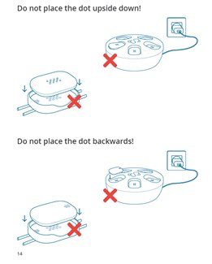 |
| Fig 29:How to clean the Sensor Dot before a measurement | Fig 30: How to place the Sensor Dot on the socking station |
Light Indications on Sensor Dot
Sensor Dot light colour when placed on the Docking station and when in use is shown below.
The light indication of the sensor dot should be blinking green when recording.
 |
 |
| Fig 33:LED light notifications explanation - Sensor Dot is placed on the Docking Station | Fig 34: LED light notifications explanation - Sensor Dot is placed on the body |
The device / app seems to have stopped working: what should I do?
If the light of the Sensor Dot turns red or off (no light) then the sensor has stopped working. In the case of red light, the sensor has potentially a technical error and should be temporarily removed from the study. Byteflies should be contacted in the case of a technical error. In the case of no light, the sensor Dot has run out of battery and should be recharged. In both cases, contact your local study centre as soon as possible.
Battery?
In the case where the Sensor Dot light turns off, the sensor’s battery needs recharging. To charge the Sensor Dots, you need to place them on the Docking station and connect the docking station with a power supply.
Connectivity issues?
There might be a difficulty connecting the Docking station with the internet; in that case repeat both steps as described in Section 3. If the difficulty remains, contact Byteflies.
Need to restart or log in again?
Not applicable.
Using the device / app is uncomfortable to me: what can I do?
If the Sensor Dot feels stable but you find it uncomfortable to wear, consider changing cloths. If the Sensor Dot or the electrodes feel unstable, contact your clinician as soon as possible to help you stabilise it. If you notice any skin irritation, remove the Sensor Patch and the electrodes and contact your clinician as soon as possible. If the Sensor Dot is placed on the head, a mild discomfort is normal; please consult with your clinician on how to make it more comfortable for you.
Adjust wear style?
Any cloths should be suitable to wear; depending on the location of the Sensor Dot, lose or tight clothes and the use of elastic bands might create a different feeling. Advice your clinician in order to find what works best for you.
Adjust usage pattern?
If you feel wearing the Sensor Dot works better during certain hours of the day whereas it creates discomfort during others; talk to your clinician on how to adapt the usage pattern better to fit with your needs and the study needs.
Returned device processing and cleaning / an application use period for a participant has ended
Do I need to clean the device after each participant returns the device?
- To clean and to wipe the surface of the Sensor Dot, use a new disposable Trionic D wipe.
- Ensure the entire surface remains wet for at least 1 minute (Trionic™ is bactericidal after 1 minute).
- Wipe off any remaining fluid with a clean disposable tissue.
- Repeat the process for the Docking station, Patch, Power Supply and USB cable, taking care to use a new Trionic D wipe for each component.
What type of material can clean/sterilise the device?
- Disposable Trionic D wipe.
Trigger Data Transfer Protocols?
« paste the instructions for manual retrieval of data from above »
Where should the device be returned?
Prior to returning any device, please ensure all data has been transferred and successfully uploaded to the IDEA-FAST hub (link to above).
Device recycling and provisioning
How will the devices and applications be supplied to the study site?
These devices will be mailed directly to the study site.